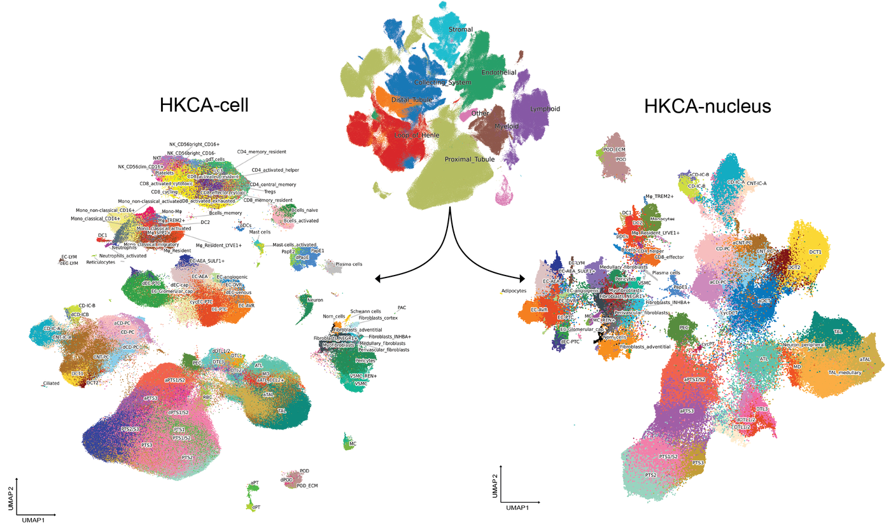

Abstract
The human kidney contains highly specialized cell populations that coordinate filtration, solute and water homeostasis, blood pressure regulation, endocrine functions, and tissue repair. Although numerous single-cell and single-nucleus studies have profiled the human kidney, differences in cohorts, technologies, analytical pipelines, and annotation frameworks have limited cross-study integration. This fragmentation has limited the ability to define consensus kidney cell states, identify rare disease-associated populations and interpret kidney disease genetics in a cellular context.
Here, we assembled 18 human kidney single-cell and single-nucleus RNA-seq datasets spanning 232 donors and five major disease contexts into a uniformly processed and computationally integrated Human Kidney Cell Atlas (HKCA). This effort comprises over one million high-quality cells (816,895) / nuclei (215,308) and resolves 120 harmonized cell states across epithelial, endothelial, stromal, mural, immune, and neural-associated compartments.

3D UMAP
Rotate, zoom and hover the integrated embeddings, coloured by harmonized cell state.
Analysis toolkit
The atlas was assembled with ScanpyPlus, the Peng He Lab’s open-source extension of Scanpy for single-cell and spatial data — including DeepTree feature selection, doublet-cluster detection, label transfer and the 3D UMAP export used above.
Citation
Stasinos K, Wang H, Predeus AV, Richoz N, Menon R, Thokadiwala M, Zhu Y, Tian R, Zhou W, Chatzigeorgiou A, Yordanova G, Zucchi I, Laszik Z, Mueller MF, The Human Cell Atlas Kidney Bionetwork, Subramanian A, Greka A, Regev A, Kretzler M, Marioni J, Luecken MD, Clatworthy M, Teichmann SA, He P. An Integrated Atlas of the Human Kidney Spanning Health and Disease. bioRxiv, 2026. doi:10.64898/2026.08.12.744548